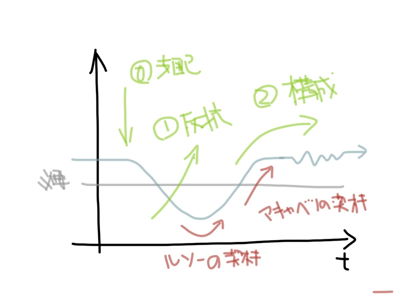
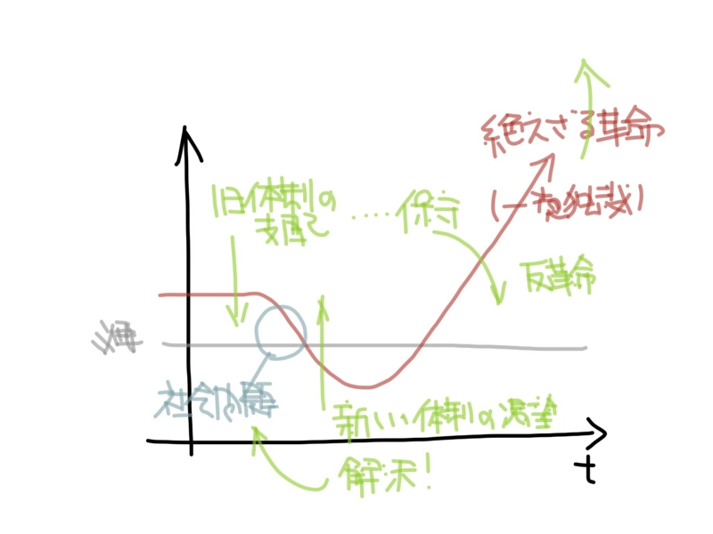

『革命について』
執筆日時：
")
- 作者: ハンナアレント,Hannah Arendt,志水速雄
- 出版社/メーカー: 筑摩書房
- 発売日: 1995/06
- メディア: 文庫
- 購入: 2人 クリック: 24回
- この商品を含むブログ (22件) を見る
下書きには“58日前”と書いてある。引っ越しのために本を梱包していたのだけど、誤ってこの本まで段ボールにつっこんでしまい、読み終えたのにブログにそのことを書けずじまいだったので、そのときにメモしたイメージ図だけ「はてなフォトライフ」に突っ込んでそのまま下書きになってしまっていた。
さてはて。
自分にとってこの本は、これまで読んできた共和主義者たち――とくにマキャヴェリ、もしかしたらトクヴィルもかもしれないけれどまだ読んでいない――たちの考え方の輪郭をくまどってくれたという感じ。とくに、“創業と守成”でいえば“創業”の部分の部分。創業とは、つまりは「革命」のことだ。
アーレントはまず、革命を政治力学的に分解する。
ルイ十六世「これは反乱だ！（C'est donc une revolte ?）」
ラ・ロシュフコー・リアンクール公爵「いいえ、陛下。これは革命です。（C'est une revolution！）」
人々が Necessity（生きていくには欠かせないモノ）を欠くような状況に陥ると、やがて既存の支配を暴力的な「反乱」によってそれを打ち倒そうとする。そしてその焼け野原に、新しい秩序を「構成」（constitute: 憲法
解放（リベレイション）と自由（フリーダム）が同じではないことは分かり切ったことであろう。

しかし、人々は解放に当たっては意見の一致を見るが、自由に当ってはそうではないらしい。「構成」（秩序立てる）のフェイズが見えてくると互いに利害*1主張するだけになり、人々は大きく渦巻く利害に踊らされるただの操り人形になり果てる*2。
その意味で、革命が多くの場合、外見上は「復古」という形をとる*3ことには少し納得がいく。たとえばマキャベリの言葉を思い出して、少し考えればよい。
頭に入れておかなければならないのは、新しい秩序を打ち立てるということくらい、難しい事業はないということである。このうえなく実行が困難で、実行したとて成功はおぼつかなく、実現での過程では細心の注意を必要とすることなのだ。
なぜなら実行者は現体制下で甘い汁を吸っていた人々すべてを敵にまわすだけでなく、新体制になれば得をするでろう人々からも生ぬるい支持しか期待できないものだからである。
この生ぬるさは二つの原因から生れる。
第一は、現体制を謳歌している人々に対する恐怖感であり、第二は、異例の新しきことへの不信感によるものだ。
異例の新しきことが信じられないのは、その果実が明確にイメージできないからだ。これまで得てきたものを捨ててまで、それは獲得されるべきものだろうか？
そういうときは、“古き良き”時代を思い起こさせ、それを取り戻すのだと説得すれば割合うまくいくだろう（そして、賢い創業者はそこへこっそり新しい秩序を忍ばせる）。東洋のように、革命を肯定する怪しげな五行説（木火土金水の徳が順番に政権を担う）が援用できればそれに越したことはないし、日本のように権威と権力が分割してあって、権威を蔑ろにし過ぎた権力を懲罰する側を肯定する“錦の御旗”システムがあれば、なおのこと流血を抑えて社会を再構成することができるだろう。
そうしたシステムが一切ないにもかかわらず、啓蒙主義に基づくまったく新しい政府を樹立する革命――アメリカ独立革命――が成功したのは、ひとつに既存の権力が存在せず、「反乱」のフェーズを省略できたことが大きい。また、アメリカへ逃れてきた人々は、決して欧州で力のある人たちではなく、また指導的立場にある人たちが啓蒙的な理想を共有していたという点において均質であった。

しかし、それを大陸に“逆輸入”することを試みた革命――フランス革命――は、そういった前提を無視していたため、「果てしなき反乱」「耐えざる革命」の連鎖反応を生み、テロと対外侵略で自滅してしまった。貧困を始めとする「社会問題」が「反乱」の過程で社会を団結させたけれど、その敵（たとえば民を顧みず浪費をやめない王といったわかりやすい敵）を打ち破ると、たちまちかつての味方が自分たちの「自由（≒利害）の敵」とみなされたり、同じ理想をいただかない「理念上の敵」として殺された。革命の目的は、その人たちをも含めた社会全体が最大限自由を享受できるように社会を新しく再「構成」することであるべきなのに。
思うに、現代でもこの「耐えざる革命」の連鎖から逃れられていない国は少なくない。中国がそうであろうし、たぶんロシアもそうなんだろう。日本はどうなんだろう。みんな満足しちゃって反乱を忘れているのが現状なのかな。でも、そういう状態がずっと続くかというと、そんな試しは歴史上一度もなかった。そんな場面に直面したとき、僕もまた巨大な利害の渦に翻弄される社会の操り人形でしかいられないのだろうか。